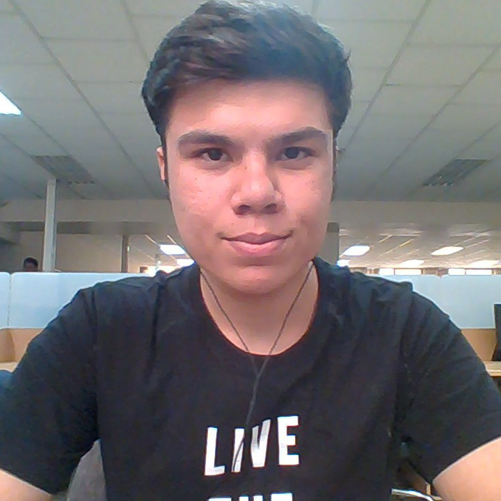
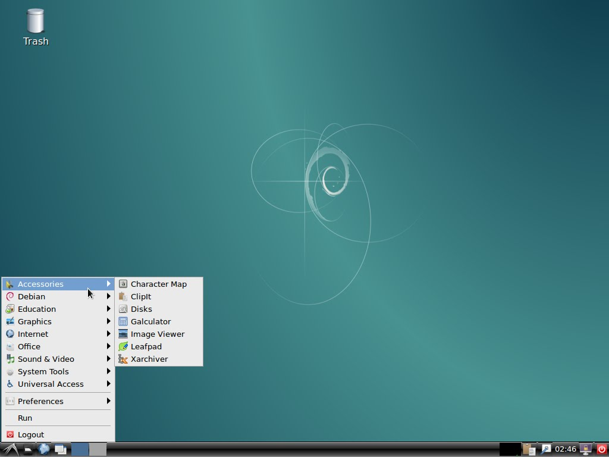

عنوان ارائه:
بررسی محیط دسکتاپ لینوکس

ارسلان سفیدگر
دانشجوی رشته مهندسی نرم افزار
درس آزمایشگاه سیستم عامل
زمان: ۲۲ مهر
میزکار یا همان دسکتاپ در واقع واسط گرافیکی بین شما و سیستم عامل است که انواع بسیاری دارد
محیط دسکتاپ (رومیزی) -Desktop Environment- در واقع شبه دسکتاپی است که براساس کاربران و نرم افزارهایی که در لایه بالایی سیستم عامل اجرا می شوند، پیاده سازی می شود. همراه با هر کدام از این دسکتاپ ها محیطی با نام GUI یا Graphical User Interface -رابط کاربری گرافیکی- عرضه می شود.
معمولا یک میزکار از یک برنامه مدیریت پنجره و یک برنامه مدیریت فایل و برنامهها و همچنین کتابخانهها برای مدیریت میز کار تشکیل شده.
پارامترهای مهم
- میزان حفظه مصرفی (رم)
- امکانات، نرم افزارها و پلاگین ها
- پایداری
- تیم توسعه و پشتیبانی
معمولا توزیع های محبوب مثل Fedora و Ubuntu سعی میکنند که سیستم عاملشون رو با چنتا توزیع زیر مجموعه با میزکار های پیش فرض متفاوت ارائه بدن!مثلا شرکت کنونیکال یا جامعه کاربری اوبونتو همیشه علاوه بر Ubuntu که از میزکار Unity استفاده میکنه،یه سری توزیع دیگه هم ارائه میده که از میزکار های دیگه به طور پیش فرض استفاده میکنند.Xubuntu با میزکار پیش فرض XFCE و Kubuntu با میزکار پیش فرض KDE و Ubuntu Gnome با میزکار پیش فرض Gnome و Lubuntu با میزکار پیش فرض LXDE و Ubuntu Mate با میزکار پیش فرض Mate و … .
بعضی توزیع های محبوب مثل ArchLinux و OpenSuse و Debian سیاست متفاوتی دارند . این توزیع ها چند توزیع زیر مجموعه برای هر میزکار ارائه نمیدن! یک فایل ایمیج برای نصب ارایه میدن و کاربر هنگام نصب توزیع میتونه میزکارش رو انتخاب کنه و براش موقع نصب اولیه میزکار دلخواهش نصب میشه .
هر کدوم از میزکارها با یک سری اهداف خاص ساخته شدند و یه سری option مخصوص به خودشون و برنامه های کاربردی مخصوص به خودشون دارند و کاربرها با توجه به نیازهاشون و البته سلیقه و روحیاتشون اونها رو انتخاب میکنند.
آیا میشه چند میزکار رو کنار هم داشت؟
بله!
پس چرا توزیع های با میزکار پیش فرض مختلف ارائه میشه؟
به نظر من جواب واضح هست! تا کاربر بهترین تجربه رو با میزکار مورد علاقش داشته باشه!همیشه توصیه من اینه که اگر از یه میزکار خوشتون اومده و میخواید به عنوان پیش فرض ازش استفاده کنید ، برید سراغ توزیع هایی که اون رو به طور پیش فرض نصب داره!مثلا اگه از XFCE خوشت میاد بهتره که Xubuntu نصب کنی که میزکار پیش فرضش XFCE هست، تا اینکه XFCE رو کنار میزکار پیش فرضت نصب کنی،چون معمولا وقتی شما یه میزکار رو کنار میزکار پیش فرض توزیع خودتون نصب میکنید یه سری مشکلات پیش بینی نشده یا ناپایداری به وجود میاد یا شاید بهترین حالت اون میزکار رو نتونید تجربه کنیدیا اگر هم مشکلی به وجود نیات بی دلیل یه سری بسته اضافی رو سیستم نصب هست.ولی برای تست از هر توزیعی استفاده میکنید میشه یه میزکار دیگه رو هم کنار میزکار پیش فرضتون داشته باشید و تستش کنید.ولی خب انتظار بهترین تجربه رو در این حالت نداشته باشید و انتظار مشکلات پیش بینی نشده ای رو هم داشته باشید! .
Gnome 3
گنوم ۳ یک رویکرد مینیمالیستی در طراحی رابط کاربری پیش گرفته است. اگرچه در ظاهر به نظر میرسد که گزینه هایی که به آنها دسترسی دارید اندک هستند، اما با باز کردن Dash (پنجره یی برای جستجو در اپلیکیشن ها) قابلیتهای زیادی در اختیار شما قرار خواهد گرفت. اگر شما کاربر باتجربه یی هستید و به دنبال محیط دسکتاپی همچون Ubuntu Unity هستید اما در عین حال تمایل دارید تا این قابلیت را داشته باشید تا بتوانید بسته به نیاز خود، تغییراتی در رابط کاربری ایجاد کنید، GNOME 3 گزینه مناسبی میتواند برای شما باشد.
Cinnamon
تیم توسعه ی توزیع Linux Mint کمبودهایی در محیط دسکتاپ گنوم مشاهده کرد، لذا تصمیم گرفتند رابط کاربری اختصاصی خود
را از روی گنوم طراحی کنند. در نتیجه، یک محیط دسکتاپ بوجود آمد تحت عنوان Cinnamon که تلفیقی از GNOME 2 و GNOME 3
است.
سینامون نسبت به گنوم ۳، قابلیت شخصی سازی به مراتب بیشتری را در اختیار کاربران قرار می دهد. با در نظر گرفتن دکمه
ی Start و دیگر اجزای رابط کاربری، سینامون فضایی برای کاربرانی که از ویندوز مهاجرت کردهاند ایجاد میکنند تا
خیلی حس غریبی نکنند! در صورتی هم که کاربری خیلی از رابط کاربری خوشش نیاید، به راحتی میتواند تغییرات مد نظر خود
را اعمال کند. به طور کلی، این محیط دسکتاپ برای کاربرانی از هر قشری مناسب است.
KDE
یکی از اولین محیط های دسکتاپ برای سیستم عامل لینوکس یا بهتر بگوییم گنو/لینوکس، محیطی است تحت عنوان KDE که از نسخه های قبلی تا آخرین نسخه ها، کاربران خیلی متوجه تغییرات ظاهری نمیشوند اما تمام تلاش توسعه دهندگان کی دی ئی این بوده تا سرعت را افزایش دهند. اگرچه که سعی شده ظاهری مدرن برای این محیط دسکتاپ ایجاد گردد، اما کماکان پس از استفاده از آن حس استفاده از ویندوز XP به کاربر دست می دهد. به طور کلی، این محیط برای کاربرانی که از محیط ویندوز -به خصوص ویندوز نسخه های ایکس پی یا ۷- به لینوکس مهاجرت میکنند و به محیطی سنتی عادت کردهاند مناسب است.
XFCE
یکی از سبک ترین محیط های دسکتاپ لینوکسی XFCE است که برای دو گروه از کاربران مناسب است: اول کاربرانی که از سیستمهای قدیمی با سختافزار ضعیف استفاده میکنند و دوم برای کاربرانی که سرعت برایشان از اهمیت بسزایی برخوردار است. اگرچه این محیط خیلی سبک است، اما در عین حال شما این امکان را دارید تا شخصی سازی های خود را نیز روی آن بدون فدا شدن سرعت اعمال کنید.
Deepin
Deepin فصل جدیدی در دنیای سیستم عامل لینوکس است. در این محیط سعی شده GUI یی کاملاً مدرن و حرفه یی در اختیار کاربران قرار گیرد. توسعه دهندگان Deepin تمام تلاش خود را به کار گرفتهاند تا بهترین ویژگیهای سایر محیط های دسکتاپ -به خصوص گنوم ۳- را در یک جا و آن هم به صورتی همگون و هماهنگ جمع کنند. به طور کلی، Deepin مناسب برای هر نوع کاربری است که تمایل به استفاده از یک محیط دسکتاپ مدرن و حرفه یی، زیبا با کاربری آسان دارد.
Unity
از میزکارهای پرقدرت دنیای گنو/لینوکس که به طور پیش فرض رو Ubuntu نصب هست و خیلی برای توزیع های دیگه طرفدار پیدا نکرد و ارائه نشد . این میزکار زیبا و مدرن هست . نسبت به XFCE امکان شخصی سازی کمتری داره . ولی کامل هست و تجربه کاربری قابل قبولی به شما خواهد داد. بعضی از برنامه های کاربردی این میزکار از میزکار Gnome گرفته شده . این میزکاردر نسخه های قبلی و نسخه فعلی با GTK+ 3 توسعه پیدا کرده.
Pantheon
Pantheon یک محیط دسکتاپ جدید است که برای اولین بار در توزیع elementary OS -که بر پایه ی توزیع اوبونتو است- به دنیا عرضه شده است. هدف از عرضه ی این توزیع این بوده تا زیبایی بیشتر با رابط کاربری ساده به بهترین شکل ممکن پیاده سازی شوند و در عین حال وابستگی کاربر به ترمینال هم به حداقل برسد. از این محیط دسکتاپ هم تقدیر به عمل آمده و هم انتقاداتی به آن وارد شده است. بدون شک، طراحان این محیط دسکتاپ از سیستم عامل مک او اس، هم در طراحی ظاهری و هم در تجربه ی کاربری الهام گرفته اند.
MATE
میزکار MATE ادامهی راه گنوم 2 است. از آنجایی که گنوم 2 طرفداران زیادی داشت پس از بازنشستگی خود و رفتن به نسخهی 3 برای ادامهی راه گنوم، عدهای از کاربران و طرفداران گنوم 2 تصمیم گرفتند بیخیال مهاجرت به گنوم 3 شده و این میزکار را برای خودشان توسعه دهند. محیطی نسبتا زیبا و راحت و با امکانات بالا! میزکار MATE سعی دارد علاوه بر حفظ تجربهی گنوم 2 برای کاربر، امکانات آنرا نیز زیاد کند و همین موضوع باعث شده همواره شاهد ویژگیهای جدید در این میزکار باشیم. MATE را میتوانید روی توزیع ubuntu-mate که توسط تیم اوبونتو تدارک دیده شده است به صورت پیشفرض ببینید. همچنین روی هر توزیع دیگری نیز قادر هستید آنرا نصب کنید.
LXDE
LXDE نام یکی دیگر از میزکارهای گنو/لینوکسی است که بسیار سبک است به طوری که حتی کامیپوتر مربوط به 10 سال قبل خود را نیز میتوانید به این میزکار مجهز کنید. (اما برای این مسئله باید به یک نکته توجه داشته باشید که بیشتر توزیعها به تازگی نسخههای 32 بیتی منتشر نمیکنند و باید یک پردازندهی 64 بیتی روی سیستم خود داشته باشید.) تمام تمرکز LXDE بر روی سبکی و سادگی است به طوری که ممکن است بعضی از ابزارهایی که روی میزکارهای قبلی خود داشتید روی LXDE نداشته باشید و مجبور به نصب آنها شوید. این میزکار را میتوانید روی توزیع لوبونتو بهصورت پیشفرض پیدا کنید که البته امکان نصب آن روی تمام توزیعهای معقول دیگر وجود دارد.
Richard Stallman
.jpg)
«نرمافزار آزاد» دربارهٔ آزادی است، نه قیمت.
برای درک بهتر باید به معنای «آزاد» در «آزادی بیان» فکر کنید، نه در «نوشیدنی مجانی».
ریچارد استالمن - بنیان گذار جنبش نرم افزار آزاد
Any Question?
منابع
Contact
asefidgar.ir
twitter.com/arsalanse
Instagram.com/arsalanse
telegram.me/arsalanse